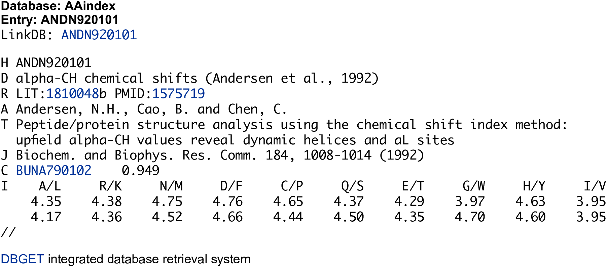
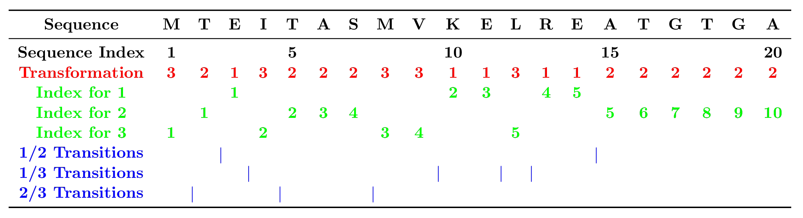

protr: R package for generating various numerical representation schemes of protein sequences
Nan Xiao <https://nanx.me>
2018-05-13
Source:vignettes/protr.Rmd
protr.RmdIntroduction
The protr package offers a unique and comprehensive toolkit for generating various numerical representation schemes of protein sequences. The descriptors included are extensively utilized in bioinformatics and chemogenomics research. The commonly used descriptors listed in protr include amino acid composition, autocorrelation, CTD, conjoint traid, quasi-sequence order, pseudo amino acid composition, and profile-based descriptors derived by Position-Specific Scoring Matrix (PSSM). The descriptors for proteochemometric (PCM) modeling, includes the scales-based descriptors derived by principal components analysis, factor analysis, multidimensional scaling, amino acid properties (AAindex), 20+ classes of 2D and 3D molecular descriptors (Topological, WHIM, VHSE, etc.), and BLOSUM/PAM matrix-derived descriptors. The protr package also integrates the function of parallelized similarity computation derived by pairwise protein sequence alignment and Gene Ontology (GO) semantic similarity measures. ProtrWeb, the web application built on protr, can be accessed from http://protr.org.
If you find protr is useful in your research, please feel free to cite our paper:
Nan Xiao, Dong-Sheng Cao, Min-Feng Zhu, and Qing-Song Xu. (2015). protr/ProtrWeb: R package and web server for generating various numerical representation schemes of protein sequences. Bioinformatics 31 (11), 1857-1859.
BibTeX entry:
@article{Xiao2015,
author = {Xiao, Nan and Cao, Dong-Sheng and Zhu, Min-Feng and Xu, Qing-Song.},
title = {{protr/ProtrWeb: R package and web server for generating
various numerical representation schemes of protein sequences}},
journal = {Bioinformatics},
year = {2015},
volume = {31},
number = {11},
pages = {1857--1859},
doi = {10.1093/bioinformatics/btv042},
issn = {1367-4803},
url = {http://bioinformatics.oxfordjournals.org/content/31/11/1857}
}An Example Workflow
Here we use the subcellular localization dataset of human proteins presented in Chou and Shen (2008) to demonstrate the workflow of using protr.
The complete dataset includes 3,134 protein sequences (2,750 different proteins), classified into 14 human subcellular locations. We selected two classes of proteins as our benchmark dataset. Class 1 contains 325 extracell proteins, and class 2 includes 307 mitochondrion proteins. Here we aim to build a random forest classification model to classify these two types of proteins.
First, we load the protr package, then read the protein sequences stored in two separated FASTA files with readFASTA():
library("protr")
# load FASTA files
extracell = readFASTA(system.file(
"protseq/extracell.fasta", package = "protr"))
mitonchon = readFASTA(system.file(
"protseq/mitochondrion.fasta", package = "protr"))To read protein sequences stored in PDB format files, use readPDB() instead. The loaded sequences will be stored as two lists in R, and each component in the list is a character string representing one protein sequence. In this case, there are 325 extracell protein sequences and 306 mitonchon protein sequences:
To ensure that the protein sequences only have the twenty standard amino acid types which is required for the descriptor computation, we use the protcheck() function to do the amino acid type sanity check and remove the non-standard sequences:
extracell = extracell[(sapply(extracell, protcheck))]
mitonchon = mitonchon[(sapply(mitonchon, protcheck))]Two protein sequences were removed from each class. For the remaining sequences, we calculate the Type II PseAAC descriptor, i.e., the amphiphilic pseudo amino acid composition (APseAAC) descriptor (Chou, 2005) and make class labels for classification modeling.
# calculate APseAAC descriptors
x1 = t(sapply(extracell, extractAPAAC))
x2 = t(sapply(mitonchon, extractAPAAC))
x = rbind(x1, x2)
# make class labels
labels = as.factor(c(rep(0, length(extracell)), rep(1, length(mitonchon))))In protr, the functions of commonly used descriptors for protein sequences and proteochemometric (PCM) modeling descriptors are named after extract...().
Next, we will split the data into a 75% training set and a 25% test set.
set.seed(1001)
# split training and test set
tr.idx = c(
sample(1:nrow(x1), round(nrow(x1) * 0.75)),
sample(nrow(x1) + 1:nrow(x2), round(nrow(x2) * 0.75))
)
te.idx = setdiff(1:nrow(x), tr.idx)
x.tr = x[tr.idx, ]
x.te = x[te.idx, ]
y.tr = labels[tr.idx]
y.te = labels[te.idx]We will train a random forest classification model on the training set with 5-fold cross-validation, using the randomForest package.
The training result is:
## Call:
## randomForest(x = x.tr, y = y.tr, cv.fold = 5)
## Type of random forest: classification
## Number of trees: 500
## No. of variables tried at each split: 8
##
## OOB estimate of error rate: 25.11%
## Confusion matrix:
## 0 1 class.error
## 0 196 46 0.1900826
## 1 72 156 0.3157895With the model trained on the training set, we predict on the test set and plot the ROC curve with the pROC package, as is shown in Figure 1.
# predict on test set
rf.pred = predict(rf.fit, newdata = x.te, type = "prob")[, 1]
# plot ROC curve
library("pROC")
plot.roc(y.te, rf.pred, grid = TRUE, print.auc = TRUE)The area under the ROC curve (AUC) is:
## Call:
## plot.roc.default(x = y.te, predictor = rf.pred, col = "#0080ff",
## grid = TRUE, print.auc = TRUE)
##
## Data: rf.pred in 81 controls (y.te 0) > 76 cases (y.te 1).
## Area under the curve: 0.8697
Figure 1: ROC curve for the test set of protein subcellular localization data
Package Overview
The protr package (Xiao et al., 2015) implemented most of the state-of-the-art protein sequence descriptors with R. Generally, each type of the descriptors (features) can be calculated with a function named extractX() in the protr package, where X stands for the abbrevation of the descriptor name. The descriptors and the function names implemented are listed below:
-
Amino acid composition
-
extractAAC()- Amino acid composition -
extractDC()- Dipeptide composition -
extractTC()- Tripeptide composition
-
-
Autocorrelation
-
extractMoreauBroto()- Normalized Moreau-Broto autocorrelation -
extractMoran()- Moran autocorrelation -
extractGeary()- Geary autocorrelation
-
-
CTD descriptors
-
extractCTDC()- Composition -
extractCTDT()- Transition -
extractCTDD()- Distribution
-
-
Conjoint triad descriptors
-
extractCTriad()- Conjoint triad descriptors
-
-
Quasi-sequence-order descriptors
-
extractSOCN()- Sequence-order-coupling number -
extractQSO()- Quasi-sequence-order descriptors
-
-
Pseudo-amino acid composition
-
extractPAAC()- Pseudo-amino acid composition (PseAAC) -
extractAPAAC()- Amphiphilic pseudo-amino acid composition (APseAAC)
-
-
Profile-based descriptors
The descriptors commonly used in Proteochemometric Modeling (PCM) implemented in protr include:
-
extractScales(),extractScalesGap()- Scales-based descriptors derived by Principal Components Analysis-
extractProtFP(),extractProtFPGap()- Scales-based descriptors derived by amino acid properties from AAindex (a.k.a. Protein Fingerprint) -
extractDescScales()- Scales-based descriptors derived by 20+ classes of 2D and 3D molecular descriptors (Topological, WHIM, VHSE, etc.)
-
-
extractFAScales()- Scales-based descriptors derived by Factor Analysis -
extractMDSScales()- Scales-based descriptors derived by Multidimensional Scaling extractBLOSUM()- BLOSUM and PAM matrix-derived descriptors
The protr package integrates the function of parallelized similarity score computation derived by local or global protein sequence alignment between a list of protein sequences, the sequence alignment computation is provided by Biostrings, the corresponding functions listed in the protr package include:
-
twoSeqSim()- Similarity calculation derived by sequence alignment between two protein sequences -
parSeqSim()- Parallelized pairwise similarity calculation with a list of protein sequences
The protr package also integrates the function of parallelized similarity score computation derived by Gene Ontology (GO) semantic similarity measures between a list of GO terms / Entrez Gene IDs, the GO similarity computation is provided by GOSemSim, the corresponding functions listed in the protr package include:
-
twoGOSim()- Similarity calculation derived by GO-terms semantic similarity measures between two GO terms / Entrez Gene IDs; -
parGOSim()- Pairwise similarity calculation with a list of GO terms / Entrez Gene IDs.
To use the parSeqSim() function, we suggest the users to install the packages foreach and doParallel first, in order to make the parallelized pairwise similarity computation available.
In the following sections, we will introduce the descriptors and function usage in this order.
Commonly Used Descriptors
Note: Users need to intelligently evaluate the underlying details of the descriptors provided, instead of using protr with their data blindly, especially for the descriptor types with more flexibility. It would be wise for the users to use some negative and positive control comparisons where relevant to help guide interpretation of the results.
A protein or peptide sequence with \(N\) amino acid residues can be generally represented as \(\{\,R_1, R_2, \ldots, R_n\,\}\), where \(R_i\) represents the residue at the \(i\)-th position in the sequence. The labels \(i\) and \(j\) are used to index amino acid position in a sequence, and \(r\), \(s\), \(t\) are used to represent the amino acid type. The computed descriptors are roughly categorized into 4 groups according to their major applications.
A protein sequence can be partitioned equally into segments. The descriptors designed for the complete sequence, can be often applied to each individual segment.
Amino Acid Composition Descriptor
The amino acid composition describes the fraction of each amino acid type within a protein sequence. The fractions of all 20 natural amino acids are calculated as:
\[ f(r) = \frac{N_r}{N} \quad r = 1, 2, \ldots, 20. \] where \(N_r\) is the number of the amino acid type \(r\) and \(N\) is the length of the sequence.
As was described above, we can use the function extractAAC() to extract the descriptors (features) from protein sequences:
library("protr")
x = readFASTA(system.file(
"protseq/P00750.fasta", package = "protr"))[[1]]
extractAAC(x)## A R N D C E
## 0.06405694 0.07117438 0.03914591 0.05160142 0.06761566 0.04804270
## Q G H I L K
## 0.04804270 0.08185053 0.03024911 0.03558719 0.07651246 0.03914591
## M F P S T W
## 0.01245552 0.03202847 0.05338078 0.08896797 0.04448399 0.02313167
## Y V
## 0.04270463 0.04982206Here, with the function readFASTA() we loaded a single protein sequence (P00750, Tissue-type plasminogen activator) from a FASTA format file. Then extracted the AAC descriptors with extractAAC(). The result returned is a named vector, whose elements are tagged with the name of each amino acid.
Dipeptide Composition Descriptor
Dipeptide composition gives a 400-dimensional descriptor, defined as:
\[ f(r, s) = \frac{N_{rs}}{N - 1} \quad r, s = 1, 2, \ldots, 20. \]
where \(N_{rs}\) is the number of dipeptide represented by amino acid type \(r\) and type \(s\). Similar to extractAAC(), here we use extractDC() to compute the descriptors:
## AA RA NA DA CA EA
## 0.003565062 0.003565062 0.000000000 0.007130125 0.003565062 0.003565062
## QA GA HA IA LA KA
## 0.007130125 0.007130125 0.001782531 0.003565062 0.001782531 0.001782531
## MA FA PA SA TA WA
## 0.000000000 0.005347594 0.003565062 0.007130125 0.003565062 0.000000000
## YA VA AR RR NR DR
## 0.000000000 0.000000000 0.003565062 0.007130125 0.005347594 0.001782531
## CR ER QR GR HR IR
## 0.005347594 0.005347594 0.000000000 0.007130125 0.001782531 0.003565062Here we only showed the first 30 elements of the result vector and omitted the rest of the result. The element names of the returned vector are self-explanatory as before.
Tripeptide Composition Descriptor
Tripeptide composition gives a 8000-dimensional descriptor, defined as:
\[ f(r, s, t) = \frac{N_{rst}}{N - 2} \quad r, s, t = 1, 2, \ldots, 20 \]
where \(N_{rst}\) is the number of tripeptides represented by amino acid type \(r\), \(s\), and \(t\). With function extractTC(), we can easily obtain the length-8000 descriptor, to save some space, here we also omitted the long outputs:
## AAA RAA NAA DAA CAA EAA
## 0.000000000 0.000000000 0.000000000 0.000000000 0.000000000 0.000000000
## QAA GAA HAA IAA LAA KAA
## 0.001785714 0.000000000 0.000000000 0.000000000 0.000000000 0.000000000
## MAA FAA PAA SAA TAA WAA
## 0.000000000 0.000000000 0.000000000 0.001785714 0.000000000 0.000000000
## YAA VAA ARA RRA NRA DRA
## 0.000000000 0.000000000 0.000000000 0.000000000 0.000000000 0.000000000
## CRA ERA QRA GRA HRA IRA
## 0.000000000 0.000000000 0.000000000 0.001785714 0.000000000 0.000000000
## LRA KRA MRA FRA PRA SRA
## 0.000000000 0.000000000 0.000000000 0.000000000 0.000000000 0.000000000Autocorrelation Descriptors
Autocorrelation descriptors are defined based on the distribution of amino acid properties along the sequence. The amino acid properties used here are various types of amino acids index (Retrieved from the AAindex Database, see Kawashima et al. (1999), Kawashima and Kanehisa (2000), and Kawashima et al. (2008); see Figure 2 for an illustrated example). Three types of autocorrelation descriptors are defined here and described below.
All the amino acid indices are centralized and standardized before the calculation, i.e.
\[ P_r = \frac{P_r - \bar{P}}{\sigma} \]
where \(\bar{P}\) is the average of the property of the 20 amino acids:
\[ \bar{P} = \frac{\sum_{r=1}^{20} P_r}{20} \quad \textrm{and} \quad \sigma = \sqrt{\frac{1}{2} \sum_{r=1}^{20} (P_r - \bar{P})^2} \]
Figure 2: An illustrated example in the AAIndex database
Normalized Moreau-Broto autocorrelation descriptors
For protein sequences, the Moreau-Broto autocorrelation descriptors can be defined as:
\[ AC(d) = \sum_{i=1}^{N-d} P_i P_{i + d} \quad d = 1, 2, \ldots, \textrm{nlag} \]
where \(d\) is called the lag of the autocorrelation; \(P_i\) and \(P_{i+d}\) are the properties of the amino acids at position \(i\) and \(i+d\); \(\textrm{nlag}\) is the maximum value of the lag.
The normalized Moreau-Broto autocorrelation descriptors are defined as:
\[ ATS(d) = \frac{AC(d)}{N-d} \quad d = 1, 2, \ldots, \textrm{nlag} \]
The corresponding function for this descriptor is extractMoreauBroto(). A typical call would be:
## CIDH920105.lag1 CIDH920105.lag2 CIDH920105.lag3 CIDH920105.lag4
## 0.081573213 -0.016064817 -0.015982990 -0.025739038
## CIDH920105.lag5 CIDH920105.lag6 CIDH920105.lag7 CIDH920105.lag8
## 0.079058632 -0.042771564 -0.036320847 0.024087298
## CIDH920105.lag9 CIDH920105.lag10 CIDH920105.lag11 CIDH920105.lag12
## -0.005273958 0.052274763 0.082170073 0.005419919
## CIDH920105.lag13 CIDH920105.lag14 CIDH920105.lag15 CIDH920105.lag16
## 0.083292042 0.004810584 0.001872446 -0.001531495
## CIDH920105.lag17 CIDH920105.lag18 CIDH920105.lag19 CIDH920105.lag20
## -0.011917230 0.071161551 0.033473197 0.026882737
## CIDH920105.lag21 CIDH920105.lag22 CIDH920105.lag23 CIDH920105.lag24
## 0.073075402 0.115272790 0.041517897 -0.027025993
## CIDH920105.lag25 CIDH920105.lag26 CIDH920105.lag27 CIDH920105.lag28
## 0.033477388 -0.003245255 0.078117010 -0.028177304
## CIDH920105.lag29 CIDH920105.lag30 BHAR880101.lag1 BHAR880101.lag2
## 0.046695832 0.020584423 0.052740185 0.030804784
## BHAR880101.lag3 BHAR880101.lag4 BHAR880101.lag5 BHAR880101.lag6
## 0.037170476 -0.058993771 0.070641780 -0.089192490The eight default properties used here are:
- AccNo. CIDH920105 - Normalized Average Hydrophobicity Scales
- AccNo. BHAR880101 - Average Flexibility Indices
- AccNo. CHAM820101 - Polarizability Parameter
- AccNo. CHAM820102 - Free Energy of Solution in Water, kcal/mole
- AccNo. CHOC760101 - Residue Accessible Surface Area in Tripeptide
- AccNo. BIGC670101 - Residue Volume
- AccNo. CHAM810101 - Steric Parameter
- AccNo. DAYM780201 - Relative Mutability
Users can change the property names of AAindex database with the argument props. The AAindex data shipped with protr can be loaded by data(AAindex), which has the detailed information of each property. With the argument customprops and nlag, users can specify their own properties and lag value to calculate with. For example:
# Define 3 custom properties
myprops = data.frame(
AccNo = c("MyProp1", "MyProp2", "MyProp3"),
A = c(0.62, -0.5, 15), R = c(-2.53, 3, 101),
N = c(-0.78, 0.2, 58), D = c(-0.9, 3, 59),
C = c(0.29, -1, 47), E = c(-0.74, 3, 73),
Q = c(-0.85, 0.2, 72), G = c(0.48, 0, 1),
H = c(-0.4, -0.5, 82), I = c(1.38, -1.8, 57),
L = c(1.06, -1.8, 57), K = c(-1.5, 3, 73),
M = c(0.64, -1.3, 75), F = c(1.19, -2.5, 91),
P = c(0.12, 0, 42), S = c(-0.18, 0.3, 31),
T = c(-0.05, -0.4, 45), W = c(0.81, -3.4, 130),
Y = c(0.26, -2.3, 107), V = c(1.08, -1.5, 43)
)
# Use 4 properties in the AAindex database, and 3 cutomized properties
moreau2 = extractMoreauBroto(
x, customprops = myprops,
props = c(
"CIDH920105", "BHAR880101",
"CHAM820101", "CHAM820102",
"MyProp1", "MyProp2", "MyProp3"))
head(moreau2, n = 36L)## CIDH920105.lag1 CIDH920105.lag2 CIDH920105.lag3 CIDH920105.lag4
## 0.081573213 -0.016064817 -0.015982990 -0.025739038
## CIDH920105.lag5 CIDH920105.lag6 CIDH920105.lag7 CIDH920105.lag8
## 0.079058632 -0.042771564 -0.036320847 0.024087298
## CIDH920105.lag9 CIDH920105.lag10 CIDH920105.lag11 CIDH920105.lag12
## -0.005273958 0.052274763 0.082170073 0.005419919
## CIDH920105.lag13 CIDH920105.lag14 CIDH920105.lag15 CIDH920105.lag16
## 0.083292042 0.004810584 0.001872446 -0.001531495
## CIDH920105.lag17 CIDH920105.lag18 CIDH920105.lag19 CIDH920105.lag20
## -0.011917230 0.071161551 0.033473197 0.026882737
## CIDH920105.lag21 CIDH920105.lag22 CIDH920105.lag23 CIDH920105.lag24
## 0.073075402 0.115272790 0.041517897 -0.027025993
## CIDH920105.lag25 CIDH920105.lag26 CIDH920105.lag27 CIDH920105.lag28
## 0.033477388 -0.003245255 0.078117010 -0.028177304
## CIDH920105.lag29 CIDH920105.lag30 BHAR880101.lag1 BHAR880101.lag2
## 0.046695832 0.020584423 0.052740185 0.030804784
## BHAR880101.lag3 BHAR880101.lag4 BHAR880101.lag5 BHAR880101.lag6
## 0.037170476 -0.058993771 0.070641780 -0.089192490About the standard input format of props and customprops, see ?extractMoreauBroto for details.
Moran autocorrelation descriptors
For protein sequences, the Moran autocorrelation descriptors can be defined as:
\[ I(d) = \frac{\frac{1}{N-d} \sum_{i=1}^{N-d} (P_i - \bar{P}') (P_{i+d} - \bar{P}')}{\frac{1}{N} \sum_{i=1}^{N} (P_i - \bar{P}')^2} \quad d = 1, 2, \ldots, 30 \]
where \(d\), \(P_i\), and \(P_{i+d}\) are defined in the same way as in the first place; \(\bar{P}'\) is the considered property \(P\) along the sequence, i.e.,
\[ \bar{P}' = \frac{\sum_{i=1}^N P_i}{N} \]
\(d\), \(P\), \(P_i\) and \(P_{i+d}\), \(\textrm{nlag}\) have the same meaning as above.
With extractMoran() (which has the identical parameters as extractMoreauBroto()), we can compute the Moran autocorrelation descriptors (only print out the first 36 elements):
# Use the 3 custom properties defined before
# and 4 properties in the AAindex database
moran = extractMoran(
x, customprops = myprops,
props = c(
"CIDH920105", "BHAR880101",
"CHAM820101", "CHAM820102",
"MyProp1", "MyProp2", "MyProp3"))
head(moran, n = 36L)## CIDH920105.lag1 CIDH920105.lag2 CIDH920105.lag3 CIDH920105.lag4
## 0.062895724 -0.044827681 -0.045065117 -0.055955678
## CIDH920105.lag5 CIDH920105.lag6 CIDH920105.lag7 CIDH920105.lag8
## 0.060586377 -0.074128412 -0.067308852 -0.001293384
## CIDH920105.lag9 CIDH920105.lag10 CIDH920105.lag11 CIDH920105.lag12
## -0.033747588 0.029392193 0.061789800 -0.023368437
## CIDH920105.lag13 CIDH920105.lag14 CIDH920105.lag15 CIDH920105.lag16
## 0.062769417 -0.024912264 -0.028298043 -0.031584063
## CIDH920105.lag17 CIDH920105.lag18 CIDH920105.lag19 CIDH920105.lag20
## -0.043466730 0.047830694 0.005883901 -0.001769769
## CIDH920105.lag21 CIDH920105.lag22 CIDH920105.lag23 CIDH920105.lag24
## 0.049334048 0.096427969 0.015147594 -0.060092509
## CIDH920105.lag25 CIDH920105.lag26 CIDH920105.lag27 CIDH920105.lag28
## 0.007549152 -0.033987885 0.056307675 -0.061844453
## CIDH920105.lag29 CIDH920105.lag30 BHAR880101.lag1 BHAR880101.lag2
## 0.021484780 -0.008461776 0.014229951 -0.009142419
## BHAR880101.lag3 BHAR880101.lag4 BHAR880101.lag5 BHAR880101.lag6
## -0.003272262 -0.109613332 0.033346233 -0.141538598Geary autocorrelation descriptors
Geary autocorrelation descriptors for protein sequences can be defined as:
\[ C(d) = \frac{\frac{1}{2(N-d)} \sum_{i=1}^{N-d} (P_i - P_{i+d})^2}{\frac{1}{N-1} \sum_{i=1}^{N} (P_i - \bar{P}')^2} \quad d = 1, 2, \ldots, 30 \]
where \(d\), \(P\), \(P_i\), \(P_{i+d}\), and \(\textrm{nlag}\) have the same meaning as above.
For each amino acid index, there will be \(3 \times \textrm{nlag}\) autocorrelation descriptors. The usage of extractGeary() is exactly the same as extractMoreauBroto() and extractMoran():
# Use the 3 custom properties defined before
# and 4 properties in the AAindex database
geary = extractGeary(
x, customprops = myprops,
props = c(
"CIDH920105", "BHAR880101",
"CHAM820101", "CHAM820102",
"MyProp1", "MyProp2", "MyProp3"))
head(geary, n = 36L)## CIDH920105.lag1 CIDH920105.lag2 CIDH920105.lag3 CIDH920105.lag4
## 0.9361830 1.0442920 1.0452843 1.0563467
## CIDH920105.lag5 CIDH920105.lag6 CIDH920105.lag7 CIDH920105.lag8
## 0.9406031 1.0765517 1.0675786 0.9991363
## CIDH920105.lag9 CIDH920105.lag10 CIDH920105.lag11 CIDH920105.lag12
## 1.0316555 0.9684585 0.9353130 1.0201990
## CIDH920105.lag13 CIDH920105.lag14 CIDH920105.lag15 CIDH920105.lag16
## 0.9340933 1.0207373 1.0251486 1.0290464
## CIDH920105.lag17 CIDH920105.lag18 CIDH920105.lag19 CIDH920105.lag20
## 1.0414375 0.9494403 0.9905987 0.9987183
## CIDH920105.lag21 CIDH920105.lag22 CIDH920105.lag23 CIDH920105.lag24
## 0.9472542 0.9010009 0.9828848 1.0574098
## CIDH920105.lag25 CIDH920105.lag26 CIDH920105.lag27 CIDH920105.lag28
## 0.9897955 1.0290018 0.9400066 1.0584150
## CIDH920105.lag29 CIDH920105.lag30 BHAR880101.lag1 BHAR880101.lag2
## 0.9762904 1.0029734 0.9818711 1.0051730
## BHAR880101.lag3 BHAR880101.lag4 BHAR880101.lag5 BHAR880101.lag6
## 0.9967069 1.1012905 0.9595859 1.1337056Composition/Transition/Distribution
The CTD descriptors are developed by Dubchak et al. (1995) and Dubchak et al. (1999).

Figure 3: The sequence of a hypothetic protein indicating the construction of composition, transition, and distribution descriptors of a protein. Sequence index indicates the position of an amino acid in the sequence. The index for each type of amino acids in the sequence (1, 2 or 3) indicates the position of the first, second, third, … of that type of amino acid. 1/2 transition indicates the position of 12 or 21 pairs in the sequence (1/3 and 2/3 are defined in the same way).
Step 1: Sequence Encoding
The amino acids are categorized into three classes according to its attribute, and each amino acid is encoded by one of the indices 1, 2, 3 according to which class it belongs. The attributes used here include hydrophobicity, normalized van der Waals volume, polarity, and polarizability. The corresponding classification for each attribute is listed in Table 1.
| Group 1 | Group 2 | Group 3 | |
|---|---|---|---|
| Hydrophobicity | Polar | Neutral | Hydrophobicity |
| R, K, E, D, Q, N | G, A, S, T, P, H, Y | C, L, V, I, M, F, W | |
| Normalized van der Waals Volume | 0-2.78 | 2.95-4.0 | 4.03-8.08 |
| G, A, S, T, P, D, C | N, V, E, Q, I, L | M, H, K, F, R, Y, W | |
| Polarity | 4.9-6.2 | 8.0-9.2 | 10.4-13.0 |
| L, I, F, W, C, M, V, Y | P, A, T, G, S | H, Q, R, K, N, E, D | |
| Polarizability | 0-1.08 | 0.128-0.186 | 0.219-0.409 |
| G, A, S, D, T | C, P, N, V, E, Q, I, L | K, M, H, F, R, Y, W | |
| Charge | Positive | Neutral | Negative |
| K, R | A, N, C, Q, G, H, I, L, M, F, P, S, T, W, Y, V | D, E | |
| Secondary Structure | Helix | Strand | Coil |
| E, A, L, M, Q, K, R, H | V, I, Y, C, W, F, T | G, N, P, S, D | |
| Solvent Accessibility | Buried | Exposed | Intermediate |
| A, L, F, C, G, I, V, W | R, K, Q, E, N, D | M, S, P, T, H, Y |
For example, for a given sequence MTEITAAMVKELRESTGAGA, it will be encoded as 32132223311311222222 according to its hydrophobicity.
Step 2: Compute Composition, Transition, and Distribution Descriptors
Three types of descriptors, Composition (C), Transition (T), and Distribution (D) can be calculated for a given attribute as follows.
Composition
Composition is defined as the global percentage for each encoded class in the protein sequence. In the above example using the hydrophobicity classification, the numbers for encoded classes 1, 2, 3 are 5, 10, and 5, so that the compositions for them will be \(5/20=25\%\), \(10/20=10\%\), and \(5/20=25\%\), where 20 is the length of the protein sequence. The composition descriptor can be expressed as
\[ C_r = \frac{n_r}{n} \quad r = 1, 2, 3 \]
where \(n_r\) is the number of amino acid type \(r\) in the encoded sequence; \(N\) is the length of the sequence. An example for extractCTDC():
## hydrophobicity.Group1 hydrophobicity.Group2 hydrophobicity.Group3
## 0.29715302 0.40569395 0.29715302
## normwaalsvolume.Group1 normwaalsvolume.Group2 normwaalsvolume.Group3
## 0.45195730 0.29715302 0.25088968
## polarity.Group1 polarity.Group2 polarity.Group3
## 0.33985765 0.33274021 0.32740214
## polarizability.Group1 polarizability.Group2 polarizability.Group3
## 0.33096085 0.41814947 0.25088968
## charge.Group1 charge.Group2 charge.Group3
## 0.11032028 0.79003559 0.09964413
## secondarystruct.Group1 secondarystruct.Group2 secondarystruct.Group3
## 0.38967972 0.29537367 0.31494662
## solventaccess.Group1 solventaccess.Group2 solventaccess.Group3
## 0.43060498 0.29715302 0.27224199The result shows the elements who are named as PropertyNumber.GroupNumber in the returned vector.
Transition
A transition from class 1 to 2 is the percent frequency with which 1 is followed by 2 or 2 is followed by 1 in the encoded sequences. The transition descriptor can be computed as
\[ T_{rs} = \frac{n_{rs} + n_{sr}}{N - 1} \quad rs = \text{12}, \text{13}, \text{23} \]
where \(n_{rs}\), \(n_{sr}\) are the numbers of dipeptide encoded as rs and sr in the sequence; \(N\) is the length of the sequence. An example for extractCTDT():
## prop1.Tr1221 prop1.Tr1331 prop1.Tr2332 prop2.Tr1221 prop2.Tr1331
## 0.27094474 0.16042781 0.23351159 0.26737968 0.22638146
## prop2.Tr2332 prop3.Tr1221 prop3.Tr1331 prop3.Tr2332 prop4.Tr1221
## 0.17112299 0.21033868 0.20499109 0.23707665 0.27272727
## prop4.Tr1331 prop4.Tr2332 prop5.Tr1221 prop5.Tr1331 prop5.Tr2332
## 0.15151515 0.24598930 0.18181818 0.02139037 0.15686275
## prop6.Tr1221 prop6.Tr1331 prop6.Tr2332 prop7.Tr1221 prop7.Tr1331
## 0.21925134 0.22816399 0.15864528 0.25133690 0.21568627
## prop7.Tr2332
## 0.18003565Distribution
The distribution descriptor describes the distribution of each attribute in the sequence.
There are five “distribution” descriptors for each attribute and they are the position percents in the whole sequence for the first residue, 25% residues, 50% residues, 75% residues, and 100% residues for a certain encoded class. For example, there are 10 residues encoded as 2 in the above example, the positions for the first residue 2, the 2nd residue 2 (25% * 10 = 2), the 5th 2 residue (50% * 10 = 5), the 7th 2 (75% * 10 = 7) and the 10th residue 2 (100% * 10) in the encoded sequence are 2, 5, 15, 17, 20, so that the distribution descriptors for 2 are: 10.0 (2/20 * 100), 25.0 (5/20 * 100), 75.0 (15/20 * 100), 85.0 (17/20 * 100), 100.0 (20/20 * 100).
To compute the distribution descriptor, use extractCTDD():
## prop1.G1.residue0 prop1.G1.residue25 prop1.G1.residue50
## 0.3558719 23.1316726 50.1779359
## prop1.G1.residue75 prop1.G1.residue100 prop1.G2.residue0
## 73.8434164 99.8220641 0.5338078
## prop1.G2.residue25 prop1.G2.residue50 prop1.G2.residue75
## 27.4021352 47.3309609 75.2669039
## prop1.G2.residue100 prop1.G3.residue0 prop1.G3.residue25
## 100.0000000 0.1779359 19.5729537
## prop1.G3.residue50 prop1.G3.residue75 prop1.G3.residue100
## 51.7793594 75.6227758 99.6441281
## prop2.G1.residue0 prop2.G1.residue25 prop2.G1.residue50
## 0.3558719 25.6227758 48.0427046
## prop2.G1.residue75 prop2.G1.residue100 prop2.G2.residue0
## 75.4448399 100.0000000 1.4234875
## prop2.G2.residue25 prop2.G2.residue50 prop2.G2.residue75
## 23.3096085 54.4483986 76.3345196
## prop2.G2.residue100 prop2.G3.residue0 prop2.G3.residue25
## 99.4661922 0.1779359 22.7758007
## prop2.G3.residue50 prop2.G3.residue75 prop2.G3.residue100
## 48.9323843 69.5729537 99.8220641
## prop3.G1.residue0 prop3.G1.residue25 prop3.G1.residue50
## 0.1779359 20.9964413 50.8896797
## prop3.G1.residue75 prop3.G1.residue100 prop3.G2.residue0
## 74.5551601 99.6441281 0.5338078
## prop3.G2.residue25 prop3.G2.residue50 prop3.G2.residue75
## 26.5124555 46.2633452 75.4448399
## prop3.G2.residue100 prop3.G3.residue0 prop3.G3.residue25
## 100.0000000 0.3558719 24.1992883
## prop3.G3.residue50 prop3.G3.residue75 prop3.G3.residue100
## 50.5338078 73.8434164 99.8220641
## prop4.G1.residue0 prop4.G1.residue25 prop4.G1.residue50
## 0.3558719 26.5124555 48.3985765
## prop4.G1.residue75 prop4.G1.residue100 prop4.G2.residue0
## 76.1565836 99.2882562 1.4234875
## prop4.G2.residue25 prop4.G2.residue50 prop4.G2.residue75
## 21.5302491 51.4234875 75.8007117
## prop4.G2.residue100 prop4.G3.residue0 prop4.G3.residue25
## 100.0000000 0.1779359 22.7758007
## prop4.G3.residue50 prop4.G3.residue75 prop4.G3.residue100
## 48.9323843 69.5729537 99.8220641
## prop5.G1.residue0 prop5.G1.residue25 prop5.G1.residue50
## 0.8896797 20.8185053 48.9323843
## prop5.G1.residue75 prop5.G1.residue100 prop5.G2.residue0
## 69.5729537 99.8220641 0.1779359
## prop5.G2.residue25 prop5.G2.residue50 prop5.G2.residue75
## 24.9110320 49.1103203 75.2669039
## prop5.G2.residue100 prop5.G3.residue0 prop5.G3.residue25
## 100.0000000 0.3558719 26.1565836
## prop5.G3.residue50 prop5.G3.residue75 prop5.G3.residue100
## 64.2348754 77.4021352 99.2882562
## prop6.G1.residue0 prop6.G1.residue25 prop6.G1.residue50
## 0.1779359 22.9537367 50.8896797
## prop6.G1.residue75 prop6.G1.residue100 prop6.G2.residue0
## 74.3772242 99.8220641 1.6014235
## prop6.G2.residue25 prop6.G2.residue50 prop6.G2.residue75
## 21.5302491 49.2882562 70.8185053
## prop6.G2.residue100 prop6.G3.residue0 prop6.G3.residue25
## 98.9323843 0.3558719 29.0035587
## prop6.G3.residue50 prop6.G3.residue75 prop6.G3.residue100
## 48.2206406 77.4021352 100.0000000
## prop7.G1.residue0 prop7.G1.residue25 prop7.G1.residue50
## 0.5338078 23.4875445 50.0000000
## prop7.G1.residue75 prop7.G1.residue100 prop7.G2.residue0
## 74.5551601 98.9323843 0.3558719
## prop7.G2.residue25 prop7.G2.residue50 prop7.G2.residue75
## 23.1316726 50.1779359 73.8434164
## prop7.G2.residue100 prop7.G3.residue0 prop7.G3.residue25
## 99.8220641 0.1779359 27.2241993
## prop7.G3.residue50 prop7.G3.residue75 prop7.G3.residue100
## 48.0427046 75.4448399 100.0000000Conjoint Triad Descriptors
Conjoint triad descriptors are proposed by Shen et al. (2007). The conjoint triad descriptors were used to model protein-protein interactions based on the classification of amino acids. In this approach, each protein sequence is represented by a vector space consisting of descriptors of amino acids. To reduce the dimensions of vector space, the 20 amino acids were clustered into several classes according to their dipoles and volumes of the side chains. The conjoint triad descriptors are calculated as follows:
Step 1: Classification of Amino Acids
Electrostatic and hydrophobic interactions dominate protein-protein interactions. These two kinds of interactions may be reflected by the dipoles and volumes of the side chains of amino acids, respectively. Accordingly, these two parameters were calculated by using the density-functional theory method B3LYP/6-31G and molecular modeling approach. Based on the dipoles and volumes of the side chains, the 20 amino acids can be clustered into seven classes (See Table 2). Amino acids within the same class likely involve synonymous mutations because of their similar characteristics.
| No. | Dipole Scale\(^1\) | Volume Scale\(^2\) | Class |
|---|---|---|---|
| 1 | \(-\) | \(-\) | Ala, Gly, Val |
| 2 | \(-\) | \(+\) | Ile, Leu, Phe, Pro |
| 3 | \(+\) | \(+\) | Tyr, Met, Thr, Ser |
| 4 | \(++\) | \(+\) | His, Asn, Gln, Tpr |
| 5 | \(+++\) | \(+\) | Arg, Lys |
| 6 | \(+'+'+'\) | \(+\) | Asp, Glu |
| 7 | \(+^3\) | \(+\) | Cys |
1 Dipole Scale (Debye): \(-\), Dipole < 1.0; \(+\), 1.0 < Dipole < 2.0; \(++\), 2.0 < Dipole < 3.0; \(+++\), Dipole > 3.0; \(+'+'+'\), Dipole > 3.0 with opposite orientation.
2 Volume Scale (\(\overset{\lower.5em\circ}{\mathrm{A}}\lower.01em^3\)): \(-\), Volume < 50; \(+\), Volume > 50.
3 Cys is separated from class 3 because of its ability to form disulfide bonds.
Step 2: Conjoint Triad Calculation
The conjoint triad descriptors considered the properties of one amino acid and its vicinal amino acids and regarded any three continuous amino acids as a unit. Thus, the triads can be differentiated according to the classes of amino acids, i.e., triads composed by three amino acids belonging to the same classes, such as ART and VKS, can be treated identically. To conveniently represent a protein, we first use a binary space \((\mathbf{V}, \mathbf{F})\) to represent a protein sequence. Here, \(\mathbf{V}\) is the vector space of the sequence features, and each feature \(v_i\) represents a sort of triad type; \(\mathbf{F}\) is the frequency vector corresponding to \(\mathbf{V}\), and the value of the \(i\)-th dimension of \(\mathbf{F} (f_i)\) is the frequency of type \(v_i\) appearing in the protein sequence. For the amino acids that have been catogorized into seven classes, the size of \(\mathbf{V}\) should be \(7 \times 7 \times 7\); thus \(i = 1, 2, \ldots, 343\). The detailed description for (\(\mathbf{V}\), \(\mathbf{F}\)) is illustrated in Figure 4.

Figure 4: Schematic diagram for constructing the vector space (\(\mathbf{V}\), \(\mathbf{F}\)) of protein sequences. \(\mathbf{V}\) is the vector space of the sequence features; each feature (\(v_i\)) represents a triad composed of three consecutive amino acids; \(\mathbf{F}\) is the frequency vector corresponding to \(\mathbf{V}\), and the value of the \(i\)-th dimension of \(\mathbf{F} (f_i)\) is the frequency that \(v_i\) triad appeared in the protein sequence.
Clearly, each protein correlates to the length (number of amino acids) of protein. In general, a long protein would have a large value of \(f_i\), which complicates the comparison between two heterogeneous proteins. Thus, we defined a new parameter, \(d_i\), by normalizing \(f_i\) with the following equation:
\[ d_i = \frac{f_i - \min\{\,f_1, f_2 , \ldots, f_{343}\,\}}{\max\{\,f_1, f_2, \ldots, f_{343}\,\}} \]
The numerical value of \(d_i\) of each protein ranges from 0 to 1, which thereby enables the comparison between proteins. Accordingly, we obtain another vector space (designated \(\mathbf{D}\)) consisting of \(d_i\) to represent protein.
To compute conjoint triads of protein sequences, we can simply use:
## VS111 VS211 VS311 VS411 VS511 VS611 VS711 VS121 VS221 VS321 VS421 VS521
## 0.1 0.3 0.6 0.2 0.4 0.0 0.3 1.0 0.6 0.5 0.0 0.2
## VS621 VS721 VS131 VS231 VS331 VS431 VS531 VS631 VS731 VS141 VS241 VS341
## 0.3 0.0 0.2 0.4 0.5 0.2 0.3 0.3 0.1 0.3 0.3 0.2
## VS441 VS541 VS641 VS741 VS151 VS251 VS351 VS451 VS551 VS651 VS751 VS161
## 0.2 0.0 0.1 0.2 0.2 0.2 0.5 0.1 0.2 0.0 0.0 0.1
## VS261 VS361 VS461 VS561 VS661 VS761 VS171 VS271 VS371 VS471 VS571 VS671
## 0.4 0.2 0.3 0.2 0.0 0.1 0.1 0.3 0.1 0.0 0.1 0.0
## VS771 VS112 VS212 VS312 VS412 VS512 VS612 VS712 VS122 VS222 VS322 VS422
## 0.1 0.8 0.4 0.4 0.6 0.1 0.5 0.2 0.8 0.5 0.2 0.3
## VS522 VS622 VS722 VS132 VS232
## 0.2 0.0 0.2 0.1 0.3by which we only outputted the first 65 of total 343 dimension to save space.
Quasi-sequence-order Descriptors
The quasi-sequence-order descriptors are proposed by Chou (2000). They are derived from the distance matrix between the 20 amino acids.
Sequence-order-coupling number
The \(d\)-th rank sequence-order-coupling number is defined as:
\[ \tau_d = \sum_{i=1}^{N-d} (d_{i, i+d})^2 \quad d = 1, 2, \ldots, \textrm{maxlag} \]
where \(d_{i, i+d}\) is the distance between the two amino acids at position \(i\) and \(i+d\).
Note: maxlag is the maximum lag and the length of the protein must be not less than \(\textrm{maxlag}\).
The function extractSOCN() is used for computing the sequence-order-coupling numbers:
## Schneider.lag1 Schneider.lag2 Schneider.lag3 Schneider.lag4
## 204.2036 199.8708 206.8102 197.4828
## Schneider.lag5 Schneider.lag6 Schneider.lag7 Schneider.lag8
## 193.3366 208.1936 195.5476 200.9789
## Schneider.lag9 Schneider.lag10 Schneider.lag11 Schneider.lag12
## 196.7110 193.9931 199.7031 204.9389
## Schneider.lag13 Schneider.lag14 Schneider.lag15 Schneider.lag16
## 187.0140 198.4702 205.4526 193.1274
## Schneider.lag17 Schneider.lag18 Schneider.lag19 Schneider.lag20
## 187.3529 190.4949 202.8853 198.5299
## Schneider.lag21 Schneider.lag22 Schneider.lag23 Schneider.lag24
## 191.1013 185.0074 189.9857 202.7113
## Schneider.lag25 Schneider.lag26 Schneider.lag27 Schneider.lag28
## 201.6267 194.5770 185.9939 204.1297
## Schneider.lag29 Schneider.lag30 Grantham.lag1 Grantham.lag2
## 191.1629 183.9073 6674686.0000 6761609.0000
## Grantham.lag3 Grantham.lag4 Grantham.lag5 Grantham.lag6
## 7138892.0000 6748261.0000 6291229.0000 6839853.0000
## Grantham.lag7 Grantham.lag8 Grantham.lag9 Grantham.lag10
## 6594164.0000 6556148.0000 6620183.0000 6770614.0000
## Grantham.lag11 Grantham.lag12 Grantham.lag13 Grantham.lag14
## 6495689.0000 6865537.0000 6297267.0000 6498247.0000
## Grantham.lag15 Grantham.lag16 Grantham.lag17 Grantham.lag18
## 6615566.0000 6572680.0000 6569081.0000 6173947.0000
## Grantham.lag19 Grantham.lag20 Grantham.lag21 Grantham.lag22
## 6570829.0000 6471308.0000 6461649.0000 5939432.0000
## Grantham.lag23 Grantham.lag24 Grantham.lag25 Grantham.lag26
## 6532121.0000 6652472.0000 6480660.0000 6382281.0000
## Grantham.lag27 Grantham.lag28 Grantham.lag29 Grantham.lag30
## 6276521.0000 6537634.0000 6442991.0000 6350157.0000Users can also specify the maximum lag value with the nlag argument.
Note: In addition to Schneider-Wrede physicochemical distance matrix (Schneider and Wrede, 1994) used by Kuo-Chen Chou, another chemical distance matrix by Grantham (1974) is also used here. So the descriptors dimension will be nlag * 2. The quasi-sequence-order descriptors described next also utilized the two matrices.
Quasi-sequence-order descriptors
For each amino acid type, a quasi-sequence-order descriptor can be defined as:
\[ X_r = \frac{f_r}{\sum_{r=1}^{20} f_r + w \sum_{d=1}^{\textrm{maxlag}} \tau_d} \quad r = 1, 2, \ldots, 20 \]
where \(f_r\) is the normalized occurrence for amino acid type \(i\) and \(w\) is a weighting factor (\(w=0.1\)). These are the first 20 quasi-sequence-order descriptors. The other 30 quasi-sequence-order are defined as:
\[ X_d = \frac{w \tau_{d-20}}{\sum_{r=1}^{20} f_r + w \sum_{d=1}^{\textrm{maxlag}} \tau_d} \quad d = 21, 22, \ldots, 20 + \textrm{maxlag} \]
Figure 5: A schematic drawing to show (a) the 1st-rank, (b) the 2nd-rank, and (3) the 3rd-rank sequence-order-coupling mode along a protein sequence. (a) Reflects the coupling mode between all the most contiguous residues, (b) that between all the 2nd most contiguous residues, and (c) that between all the 3rd most contiguous residues. This figure is from Chou (2000).
A minimal example for extractQSO():
## Schneider.Xr.A Schneider.Xr.R Schneider.Xr.N Schneider.Xr.D
## 6.096218e-02 6.773576e-02 3.725467e-02 4.910842e-02
## Schneider.Xr.C Schneider.Xr.E Schneider.Xr.Q Schneider.Xr.G
## 6.434897e-02 4.572164e-02 4.572164e-02 7.789612e-02
## Schneider.Xr.H Schneider.Xr.I Schneider.Xr.L Schneider.Xr.K
## 2.878770e-02 3.386788e-02 7.281594e-02 3.725467e-02
## Schneider.Xr.M Schneider.Xr.F Schneider.Xr.P Schneider.Xr.S
## 1.185376e-02 3.048109e-02 5.080182e-02 8.466970e-02
## Schneider.Xr.T Schneider.Xr.W Schneider.Xr.Y Schneider.Xr.V
## 4.233485e-02 2.201412e-02 4.064145e-02 4.741503e-02
## Grantham.Xr.A Grantham.Xr.R Grantham.Xr.N Grantham.Xr.D
## 1.835033e-06 2.038926e-06 1.121409e-06 1.478221e-06
## Grantham.Xr.C Grantham.Xr.E Grantham.Xr.Q Grantham.Xr.G
## 1.936980e-06 1.376275e-06 1.376275e-06 2.344765e-06
## Grantham.Xr.H Grantham.Xr.I Grantham.Xr.L Grantham.Xr.K
## 8.665435e-07 1.019463e-06 2.191845e-06 1.121409e-06
## Grantham.Xr.M Grantham.Xr.F Grantham.Xr.P Grantham.Xr.S
## 3.568120e-07 9.175167e-07 1.529194e-06 2.548657e-06
## Grantham.Xr.T Grantham.Xr.W Grantham.Xr.Y Grantham.Xr.V
## 1.274329e-06 6.626509e-07 1.223356e-06 1.427248e-06
## Schneider.Xd.1 Schneider.Xd.2 Schneider.Xd.3 Schneider.Xd.4
## 3.457972e-02 3.384600e-02 3.502111e-02 3.344162e-02
## Schneider.Xd.5 Schneider.Xd.6 Schneider.Xd.7 Schneider.Xd.8
## 3.273951e-02 3.525537e-02 3.311390e-02 3.403364e-02
## Schneider.Xd.9 Schneider.Xd.10 Schneider.Xd.11 Schneider.Xd.12
## 3.331093e-02 3.285068e-02 3.381760e-02 3.470422e-02
## Schneider.Xd.13 Schneider.Xd.14 Schneider.Xd.15 Schneider.Xd.16
## 3.166883e-02 3.360882e-02 3.479121e-02 3.270408e-02
## Schneider.Xd.17 Schneider.Xd.18 Schneider.Xd.19 Schneider.Xd.20
## 3.172623e-02 3.225829e-02 3.435647e-02 3.361893e-02
## Schneider.Xd.21 Schneider.Xd.22 Schneider.Xd.23 Schneider.Xd.24
## 3.236099e-02 3.132904e-02 3.217206e-02 3.432701e-02
## Schneider.Xd.25 Schneider.Xd.26 Schneider.Xd.27 Schneider.Xd.28
## 3.414334e-02 3.294954e-02 3.149609e-02 3.456720e-02
## Schneider.Xd.29 Schneider.Xd.30 Grantham.Xd.1 Grantham.Xd.2
## 3.237140e-02 3.114275e-02 3.402298e-02 3.446605e-02
## Grantham.Xd.3 Grantham.Xd.4 Grantham.Xd.5 Grantham.Xd.6
## 3.638918e-02 3.439801e-02 3.206838e-02 3.486488e-02
## Grantham.Xd.7 Grantham.Xd.8 Grantham.Xd.9 Grantham.Xd.10
## 3.361253e-02 3.341875e-02 3.374516e-02 3.451195e-02
## Grantham.Xd.11 Grantham.Xd.12 Grantham.Xd.13 Grantham.Xd.14
## 3.311057e-02 3.499580e-02 3.209915e-02 3.312361e-02
## Grantham.Xd.15 Grantham.Xd.16 Grantham.Xd.17 Grantham.Xd.18
## 3.372162e-02 3.350302e-02 3.348467e-02 3.147055e-02
## Grantham.Xd.19 Grantham.Xd.20 Grantham.Xd.21 Grantham.Xd.22
## 3.349358e-02 3.298629e-02 3.293706e-02 3.027516e-02
## Grantham.Xd.23 Grantham.Xd.24 Grantham.Xd.25 Grantham.Xd.26
## 3.329628e-02 3.390974e-02 3.303396e-02 3.253250e-02
## Grantham.Xd.27 Grantham.Xd.28 Grantham.Xd.29 Grantham.Xd.30
## 3.199340e-02 3.332438e-02 3.284195e-02 3.236875e-02where users can also specify the maximum lag with the argument nlag and the weighting factor with the argument w.
Pseudo-Amino Acid Composition (PseAAC)
This group of descriptors are proposed by Chou (2001). PseAAC descriptors are also named as the type 1 pseudo-amino acid composition. Let \(H_1^o (i)\), \(H_2^o (i)\), \(M^o (i)\) (\(i=1, 2, 3, \ldots, 20\)) be the original hydrophobicity values, the original hydrophilicity values and the original side chain masses of the 20 natural amino acids, respectively. They are converted to following qualities by a standard conversion:
\[ H_1 (i) = \frac{H_1^o (i) - \frac{1}{20} \sum_{i=1}^{20} H_1^o (i)}{\sqrt{\frac{\sum_{i=1}^{20} [H_1^o (i) - \frac{1}{20} \sum_{i=1}^{20} H_1^o (i) ]^2}{20}}} \]
\(H_2^o (i)\) and \(M^o (i)\) are normalized as \(H_2 (i)\) and \(M (i)\) in the same way.

Figure 6: A schematic drawing to show (a) the first-tier, (b) the second-tier, and (3) the third-tiersequence order correlation mode along a protein sequence. Panel (a) reflects the correlation mode between all the most contiguous residues, panel (b) that between all the second-most contiguous residues, and panel (c) that between all the third-most contiguous residues. This figure is from Chou (2001).
Then, a correlation function can be defines as
\[ \Theta (R_i, R_j) = \frac{1}{3} \bigg\{ [ H_1 (R_i) - H_1 (R_j) ]^2 + [ H_2 (R_i) - H_2 (R_j) ]^2 + [ M (R_i) - M (R_j) ]^2 \bigg\} \]
This correlation function is actually an average value for the three amino acid properties: hydrophobicity value, hydrophilicity value and side chain mass. Therefore, we can extend this definition of correlation functions for one amino acid property or for a set of \(n\) amino acid properties.
For one amino acid property, the correlation can be defined as:
\[ \Theta (R_i, R_j) = [H_1 (R_i) - H_1(R_j)]^2 \]
where \(H (R_i)\) is the amino acid property of amino acid \(R_i\) after standardization.
For a set of n amino acid properties, it can be defined as: where \(H_k (R_i)\) is the \(k\)-th property in the amino acid property set for amino acid \(R_i\).
\[ \Theta (R_i, R_j) = \frac{1}{n} \sum_{k=1}^{n} [H_k (R_i) - H_k (R_j)]^2 \]
where \(H_k(R_i)\) is the \(k\)-th property in the amino acid property set for amino acid \(R_i\).
A set of descriptors named sequence order-correlated factors are defined as:
\[\begin{align*} \theta_1 & = \frac{1}{N-1} \sum_{i=1}^{N-1} \Theta (R_i, R_{i+1})\\ \theta_2 & = \frac{1}{N-2} \sum_{i=1}^{N-2} \Theta (R_i, R_{i+2})\\ \theta_3 & = \frac{1}{N-3} \sum_{i=1}^{N-3} \Theta (R_i, R_{i+3})\\ & \ldots \\ \theta_\lambda & = \frac{1}{N-\lambda} \sum_{i=1}^{N-\lambda} \Theta (R_i, R_{i+\lambda}) \end{align*}\]
\(\lambda\) (\(\lambda < L\)) is a parameter to be specified. Let \(f_i\) be the normalized occurrence frequency of the 20 amino acids in the protein sequence, a set of \(20 + \lambda\) descriptors called the pseudo-amino acid composition for a protein sequence can be defines as:
\[ X_c = \frac{f_c}{\sum_{r=1}^{20} f_r + w \sum_{j=1}^{\lambda} \theta_j} \quad (1 < c < 20) \]
\[ X_c = \frac{w \theta_{c-20}}{\sum_{r=1}^{20} f_r + w \sum_{j=1}^{\lambda} \theta_j} \quad (21 < c < 20 + \lambda) \]
where \(w\) is the weighting factor for the sequence-order effect and is set to \(w = 0.05\) in protr as suggested by Kuo-Chen Chou.
With extractPAAC(), we can compute the PseAAC descriptors directly:
## Xc1.A Xc1.R Xc1.N Xc1.D Xc1.C
## 9.07025432 10.07806035 5.54293319 7.30659376 9.57415734
## Xc1.E Xc1.Q Xc1.G Xc1.H Xc1.I
## 6.80269074 6.80269074 11.58976941 4.28317565 5.03903018
## Xc1.L Xc1.K Xc1.M Xc1.F Xc1.P
## 10.83391488 5.54293319 1.76366056 4.53512716 7.55854527
## Xc1.S Xc1.T Xc1.W Xc1.Y Xc1.V
## 12.59757544 6.29878772 3.27536961 6.04683621 7.05464225
## Xc2.lambda.1 Xc2.lambda.2 Xc2.lambda.3 Xc2.lambda.4 Xc2.lambda.5
## 0.02514092 0.02500357 0.02527773 0.02553159 0.02445265
## Xc2.lambda.6 Xc2.lambda.7 Xc2.lambda.8 Xc2.lambda.9 Xc2.lambda.10
## 0.02561910 0.02486131 0.02506656 0.02553952 0.02437663
## Xc2.lambda.11 Xc2.lambda.12 Xc2.lambda.13 Xc2.lambda.14 Xc2.lambda.15
## 0.02491262 0.02533803 0.02351915 0.02479912 0.02548431
## Xc2.lambda.16 Xc2.lambda.17 Xc2.lambda.18 Xc2.lambda.19 Xc2.lambda.20
## 0.02478210 0.02513770 0.02457224 0.02543046 0.02500889
## Xc2.lambda.21 Xc2.lambda.22 Xc2.lambda.23 Xc2.lambda.24 Xc2.lambda.25
## 0.02476967 0.02342389 0.02431684 0.02610300 0.02626722
## Xc2.lambda.26 Xc2.lambda.27 Xc2.lambda.28 Xc2.lambda.29 Xc2.lambda.30
## 0.02457082 0.02343049 0.02588823 0.02490463 0.02451951The extractPAAC() fucntion also provides the additional arguments props and customprops, which are similar to those arguments for Moreau-Broto/Moran/Geary autocorrelation descriptors. For their minor differences, please see ?extracPAAC. Users can specify the lambda parameter and the weighting factor with arguments lambda and w.
Note: In the work of Kuo-Chen Chou, the definition for “normalized occurrence frequency” was not given. In this work, we define it as the occurrence frequency of amino acid in the sequence normalized to 100% and hence our calculated values are not the same as values by them.
Amphiphilic Pseudo-Amino Acid Composition (APseAAC)
Amphiphilic Pseudo-Amino Acid Composition (APseAAC) was proposed in Chou (2001). APseAAC is also recognized as the type 2 pseudo-amino acid composition. The definitions of these qualities are similar to the PAAC descriptors. From \(H_1 (i)\) and \(H_2 (j)\) defined before, the hydrophobicity and hydrophilicity correlation functions are defined as:
\[\begin{align*} H_{i, j}^1 & = H_1 (i) H_1 (j)\\ H_{i, j}^2 & = H_2 (i) H_2 (j) \end{align*}\]
From these qualities, sequence order factors can be defines as:
\[\begin{align*} \tau_1 & = \frac{1}{N-1} \sum_{i=1}^{N-1} H_{i, i+1}^1\\ \tau_2 & = \frac{1}{N-1} \sum_{i=1}^{N-1} H_{i, i+1}^2\\ \tau_3 & = \frac{1}{N-2} \sum_{i=1}^{N-2} H_{i, i+2}^1\\ \tau_4 & = \frac{1}{N-2} \sum_{i=1}^{N-2} H_{i, i+2}^2\\ & \ldots \\ \tau_{2 \lambda - 1} & = \frac{1}{N-\lambda} \sum_{i=1}^{N-\lambda} H_{i, i+\lambda}^1\\ \tau_{2 \lambda} & = \frac{1}{N-\lambda} \sum_{i=1}^{N-\lambda} H_{i, i+\lambda}^2 \end{align*}\]

Figure 7: A schematic diagram to show (a1/a2) the first-rank, (b1/b2) the second-rank and (c1/c2) the third-rank sequence-order-coupling mode along a protein sequence through a hydrophobicity/hydrophilicity correlation function, where \(H_{i, j}^1\) and \(H_{i, j}^2\) are given by Equation (3). Panel (a1/a2) reflects the coupling mode between all the most contiguous residues, panel (b1/b2) that between all the second-most contiguous residues and panel (c1/c2) that between all the third-most contiguous residues. This figure is from Chou (2005).
Then a set of descriptors called Amphiphilic Pseudo-Amino Acid Composition (APseAAC) are defined as:
\[ P_c = \frac{f_c}{\sum_{r=1}^{20} f_r + w \sum_{j=1}^{2 \lambda} \tau_j} \quad (1 < c < 20) \]
\[ P_c = \frac{w \tau_u}{\sum_{r=1}^{20} f_r + w \sum_{j=1}^{2 \lambda} \tau_j} \quad (21 < u < 20 + 2 \lambda) \]
where \(w\) is the weighting factor. Its default value is set to \(w = 0.5\) in protr.
A minimal example for extracAPAAC() is:
## Pc1.A Pc1.R Pc1.N
## 3.537412e+01 3.930458e+01 2.161752e+01
## Pc1.D Pc1.C Pc1.E
## 2.849582e+01 3.733935e+01 2.653059e+01
## Pc1.Q Pc1.G Pc1.H
## 2.653059e+01 4.520027e+01 1.670445e+01
## Pc1.I Pc1.L Pc1.K
## 1.965229e+01 4.225242e+01 2.161752e+01
## Pc1.M Pc1.F Pc1.P
## 6.878302e+00 1.768706e+01 2.947844e+01
## Pc1.S Pc1.T Pc1.W
## 4.913073e+01 2.456536e+01 1.277399e+01
## Pc1.Y Pc1.V Pc2.Hydrophobicity.1
## 2.358275e+01 2.751321e+01 2.196320e-04
## Pc2.Hydrophilicity.1 Pc2.Hydrophobicity.2 Pc2.Hydrophilicity.2
## 1.025766e-03 -3.088876e-04 -1.834385e-04
## Pc2.Hydrophobicity.3 Pc2.Hydrophilicity.3 Pc2.Hydrophobicity.4
## 1.174146e-03 7.400156e-04 -1.105715e-03
## Pc2.Hydrophilicity.4 Pc2.Hydrophobicity.5 Pc2.Hydrophilicity.5
## -4.493680e-04 1.766358e-03 1.471212e-03
## Pc2.Hydrophobicity.6 Pc2.Hydrophilicity.6 Pc2.Hydrophobicity.7
## -1.441572e-03 -4.913600e-03 -1.678053e-05
## Pc2.Hydrophilicity.7 Pc2.Hydrophobicity.8 Pc2.Hydrophilicity.8
## 7.312356e-04 -1.885399e-03 -1.928708e-03
## Pc2.Hydrophobicity.9 Pc2.Hydrophilicity.9 Pc2.Hydrophobicity.10
## -2.931177e-03 -1.555660e-03 2.916597e-03
## Pc2.Hydrophilicity.10 Pc2.Hydrophobicity.11 Pc2.Hydrophilicity.11
## 3.602591e-03 1.055082e-04 8.697920e-04
## Pc2.Hydrophobicity.12 Pc2.Hydrophilicity.12 Pc2.Hydrophobicity.13
## -9.276413e-04 -2.001384e-03 1.705044e-03
## Pc2.Hydrophilicity.13 Pc2.Hydrophobicity.14 Pc2.Hydrophilicity.14
## 4.364007e-03 7.883453e-04 -9.441693e-04
## Pc2.Hydrophobicity.15 Pc2.Hydrophilicity.15 Pc2.Hydrophobicity.16
## -3.133437e-04 -3.599332e-03 3.689079e-05
## Pc2.Hydrophilicity.16 Pc2.Hydrophobicity.17 Pc2.Hydrophilicity.17
## 2.483867e-03 4.832798e-04 2.465788e-03
## Pc2.Hydrophobicity.18 Pc2.Hydrophilicity.18 Pc2.Hydrophobicity.19
## -3.142728e-04 2.021961e-03 6.421283e-05
## Pc2.Hydrophilicity.19 Pc2.Hydrophobicity.20 Pc2.Hydrophilicity.20
## -8.896690e-04 -2.986886e-04 9.304039e-04
## Pc2.Hydrophobicity.21 Pc2.Hydrophilicity.21 Pc2.Hydrophobicity.22
## -6.777458e-04 1.646818e-03 3.193506e-03
## Pc2.Hydrophilicity.22 Pc2.Hydrophobicity.23 Pc2.Hydrophilicity.23
## 3.270656e-03 2.533569e-03 2.478252e-03
## Pc2.Hydrophobicity.24 Pc2.Hydrophilicity.24 Pc2.Hydrophobicity.25
## -2.489106e-03 -1.031008e-03 -3.992322e-03
## Pc2.Hydrophilicity.25 Pc2.Hydrophobicity.26 Pc2.Hydrophilicity.26
## -2.596060e-03 8.690771e-04 -1.221378e-03
## Pc2.Hydrophobicity.27 Pc2.Hydrophilicity.27 Pc2.Hydrophobicity.28
## 5.208649e-03 4.617400e-03 -1.088584e-03
## Pc2.Hydrophilicity.28 Pc2.Hydrophobicity.29 Pc2.Hydrophilicity.29
## -2.512263e-03 1.387641e-03 2.060890e-03
## Pc2.Hydrophobicity.30 Pc2.Hydrophilicity.30
## 3.177340e-04 1.451909e-03This function has the same arguments as extractPAAC().
Profile-Based Descriptors
The profile-based descriptors for protein sequences are available in the protr package. The feature vectors of profile-based methods were based on the PSSM by running PSI-BLAST, and often show good performance. See Ye et al. (2011) and Rangwala and Karypis (2005) for details. The functions extractPSSM(), extractPSSMAcc() and extractPSSMFeature() are used to generate these descriptors. Users need to install the NCBI-BLAST+ software package first to make the functions fully functional.
Descriptors for Proteochemometric Modeling
Proteochemometric (PCM) modeling utilizes statistical modeling techniques to model ligand-target interaction space. The below descriptors implemented in protr are extensively used in Proteochemometric modeling.
-
Scales-based descriptors derived by Principal Components Analysis
- Scales-based descriptors derived by Amino Acid Properties from AAindex (Protein Fingerprint)
- Scales-based descriptors derived by 20+ classes of 2D and 3D molecular descriptors (Topological, WHIM, VHSE, etc.)
- Scales-based descriptors derived by Factor Analysis
- Scales-based descriptors derived by Multidimensional Scaling
BLOSUM and PAM matrix-derived descriptors
Note that each of the scales-based descriptor functions are freely to combine with the more than 20 classes of 2D and 3D molecular descriptors to construct highly customized scales-based descriptors. Of course, these functions are designed to be flexible enough that users can provide totally self-defined property matrices to construct scales-based descriptors.
For example, to compute the “topological scales” derived by PCA (using the first 5 principal components), one can use extractDescScales():
x = readFASTA(system.file(
"protseq/P00750.fasta", package = "protr"))[[1]]
descscales = extractDescScales(
x, propmat = "AATopo",
index = c(37:41, 43:47),
pc = 5, lag = 7, silent = FALSE)## Summary of the first 5 principal components:
## PC1 PC2 PC3 PC4 PC5
## Standard deviation 2.581537 1.754133 0.4621854 0.1918666 0.08972087
## Proportion of Variance 0.666430 0.307700 0.0213600 0.0036800 0.00080000
## Cumulative Proportion 0.666430 0.974130 0.9954900 0.9991700 0.99998000the argument propmat involkes the AATopo dataset shipped with the protr package, and the argument index selects the 37 to 41 and the 43 to 47 columns (molecular descriptors) in the AATopo dataset to use, the parameter lag was set for the Auto Cross Covariance (ACC) for generating scales-based descriptors of the same length. At last, we printed the summary of the first 5 principal components (standard deviation, proportion of variance, cumulative proportion of variance).
The result is a length 175 named vector, which is consistent with the descriptors before:
## [1] 175## scl1.lag1 scl2.lag1 scl3.lag1 scl4.lag1 scl5.lag1
## -2.645644e-01 -1.717847e-02 1.975438e-02 -7.930659e-05 -3.710597e-05
## scl1.lag2 scl2.lag2 scl3.lag2 scl4.lag2 scl5.lag2
## 3.548612e-01 1.343712e-01 5.699395e-03 -5.489472e-04 -6.364577e-05
## scl1.lag3 scl2.lag3 scl3.lag3 scl4.lag3 scl5.lag3
## 2.011431e-02 -9.211136e-02 -1.461755e-03 6.747801e-04 2.386782e-04For another example, to compute the descriptors derived by the BLOSUM62 matrix and use the first 5 scales, one can use:
x = readFASTA(system.file(
"protseq/P00750.fasta", package = "protr"))[[1]]
blosum = extractBLOSUM(
x, submat = "AABLOSUM62",
k = 5, lag = 7, scale = TRUE, silent = FALSE)## Relative importance of all the possible 20 scales:
## [1] 1.204960e+01 7.982007e+00 6.254364e+00 4.533706e+00 4.326286e+00
## [6] 3.850579e+00 3.752197e+00 3.538207e+00 3.139155e+00 2.546405e+00
## [11] 2.373286e+00 1.666259e+00 1.553126e+00 1.263685e+00 1.024699e+00
## [16] 9.630187e-01 9.225759e-01 7.221636e-01 1.020085e-01 5.868878e-16The result is a length 175 named vector:
## [1] 175## scl1.lag1 scl2.lag1 scl3.lag1 scl4.lag1 scl5.lag1
## 0.0042370555 -0.0021502057 0.0005993291 0.0006456375 0.0014849592
## scl1.lag2 scl2.lag2 scl3.lag2 scl4.lag2 scl5.lag2
## -0.0014919096 0.0032873726 0.0011734162 -0.0021758536 -0.0018127568
## scl1.lag3 scl2.lag3 scl3.lag3 scl4.lag3 scl5.lag3
## -0.0029413528 0.0001494193 0.0003298806 -0.0017877430 -0.0051044133Dealing with gaps. In proteochemometrics, (sequence alignment) gaps can be very useful, since a gap in a certain position contains information. The protr package has built-in support for such gaps. We deal with the gaps by using a dummy descriptor to code for the 21st type of amino acid. The function extractScalesGap() and extractProtFPGap() can be used to deal with such gaps. See ?extractScalesGap and ?extractProtFPGap for details.
Similarity Calculation by Sequence Alignment
Similarity computation derived by local or global protein sequence alignment between a list of protein sequences is of great need in protein research. However, this type of pairwise similarity computation often computationally intensive, especially when there exists many protein sequences. Luckily, this process is also highly parallelizable, the protr package integrates the function of parallelized similarity computation derived by local or global protein sequence alignment between a list of protein sequences.
The function twoSeqSim() calculates the alignment result between two protein sequences. The function parSeqSim() calculates the pairwise similarity calculation with a list of protein sequences in parallel:
s1 = readFASTA(system.file("protseq/P00750.fasta", package = "protr"))[[1]]
s2 = readFASTA(system.file("protseq/P08218.fasta", package = "protr"))[[1]]
s3 = readFASTA(system.file("protseq/P10323.fasta", package = "protr"))[[1]]
s4 = readFASTA(system.file("protseq/P20160.fasta", package = "protr"))[[1]]
s5 = readFASTA(system.file("protseq/Q9NZP8.fasta", package = "protr"))[[1]]
plist = list(s1, s2, s3, s4, s5)
psimmat = parSeqSim(plist, cores = 4, type = "local", submat = "BLOSUM62")
print(psimmat)## [,1] [,2] [,3] [,4] [,5]
## [1,] 1.00000000 0.11825938 0.10236985 0.04921696 0.03943488
## [2,] 0.11825938 1.00000000 0.18858241 0.12124217 0.06391103
## [3,] 0.10236985 0.18858241 1.00000000 0.05819984 0.06175942
## [4,] 0.04921696 0.12124217 0.05819984 1.00000000 0.05714638
## [5,] 0.03943488 0.06391103 0.06175942 0.05714638 1.00000000We should note that for a small number of proteins, calculating their pairwise similarity scores derived by sequence alignment in parallel may not significantly reduce the overall computation time, since each of the task only requires a relatively small time to finish, thus, computational overheads may exist and affect the performance. In testing, we used about 1,000 protein sequences on 64 CPU cores, and observed significant performance improvement comparing to the sequential computation.
Users should install the packages foreach and doParallel before using parSeqSim(), according to their operation system. The protr package will automatically decide which backend to use.
Similarity Calculation by GO Semantic Similarity Measures
The protr package also integrates the function of similarity score computation derived by Gene Ontology (GO) semantic similarity measures between a list of GO terms or Entrez Gene IDs.
The function twoGOSim() calculates the similarity derived by GO-terms semantic similarity measures between two GO terms / Entrez Gene IDs, and the function parGOSim() calculates the pairwise similarity with a list of GO terms / Entrez Gene IDs:
# by GO Terms
go1 = c("GO:0005215", "GO:0005488", "GO:0005515",
"GO:0005625", "GO:0005802", "GO:0005905") # AP4B1
go2 = c("GO:0005515", "GO:0005634", "GO:0005681",
"GO:0008380", "GO:0031202") # BCAS2
go3 = c("GO:0003735", "GO:0005622", "GO:0005840",
"GO:0006412") # PDE4DIP
glist = list(go1, go2, go3)
gsimmat1 = parGOSim(glist, type = "go", ont = "CC")
print(gsimmat1)Miscellaneous Tools
In this section, we will briefly introduce some useful tools provided by the protr package.
Retrieve Protein Sequences from UniProt
This function getUniProt() gets protein sequences from uniprot.org by protein ID(s). The input ID is a character vector specifying the protein ID(s). The returned sequences are stored in a list:
## [[1]]
## [1] "MDAMKRGLCCVLLLCGAVFVSPSQEIHARFRRGARSYQVICRDEKTQMIYQQHQSWLRPVLRSNRVEYCWCN
## SGRAQCHSVPVKSCSEPRCFNGGTCQQALYFSDFVCQCPEGFAGKCCEIDTRATCYEDQGISYRGTWSTAESGAECT
## NWNSSALAQKPYSGRRPDAIRLGLGNHNYCRNPDRDSKPWCYVFKAGKYSSEFCSTPACSEGNSDCYFGNGSAYRGT
## HSLTESGASCLPWNSMILIGKVYTAQNPSAQALGLGKHNYCRNPDGDAKPWCHVLKNRRLTWEYCDVPSCSTCGLRQ
## YSQPQFRIKGGLFADIASHPWQAAIFAKHRRSPGERFLCGGILISSCWILSAAHCFQERFPPHHLTVILGRTYRVVP
## GEEEQKFEVEKYIVHKEFDDDTYDNDIALLQLKSDSSRCAQESSVVRTVCLPPADLQLPDWTECELSGYGKHEALSP
## FYSERLKEAHVRLYPSSRCTSQHLLNRTVTDNMLCAGDTRSGGPQANLHDACQGDSGGPLVCLNDGRMTLVGIISWG
## LGCGQKDVPGVYTKVTNYLDWIRDNMRP"
##
## [[2]]
## [1] "MGSNLSPQLCLMPFILGLLSGGVTTTPWSLARPQGSCSLEGVEIKGGSFRLLQEGQALEYVCPSGFYPYPVQ
## TRTCRSTGSWSTLKTQDQKTVRKAECRAIHCPRPHDFENGEYWPRSPYYNVSDEISFHCYDGYTLRGSANRTCQVNG
## RWSGQTAICDNGAGYCSNPGIPIGTRKVGSQYRLEDSVTYHCSRGLTLRGSQRRTCQEGGSWSGTEPSCQDSFMYDT
## PQEVAEAFLSSLTETIEGVDAEDGHGPGEQQKRKIVLDPSGSMNIYLVLDGSDSIGASNFTGAKKCLVNLIEKVASY
## GVKPRYGLVTYATYPKIWVKVSEADSSNADWVTKQLNEINYEDHKLKSGTNTKKALQAVYSMMSWPDDVPPEGWNRT
## RHVIILMTDGLHNMGGDPITVIDEIRDLLYIGKDRKNPREDYLDVYVFGVGPLVNQVNINALASKKDNEQHVFKVKD
## MENLEDVFYQMIDESQSLSLCGMVWEHRKGTDYHKQPWQAKISVIRPSKGHESCMGAVVSEYFVLTAAHCFTVDDKE
## HSIKVSVGGEKRDLEIEVVLFHPNYNINGKKEAGIPEFYDYDVALIKLKNKLKYGQTIRPICLPCTEGTTRALRLPP
## TTTCQQQKEELLPAQDIKALFVSEEEKKLTRKEVYIKNGDKKGSCERDAQYAPGYDKVKDISEVVTPRFLCTGGVSP
## YADPNTCRGDSGGPLIVHKRSRFIQVGVISWGVVDVCKNQKRQKQVPAHARDFHINLFQVLPWLKEKLQDEDLGFL"
##
## [[3]]
## [1] "APPIQSRIIGGRECEKNSHPWQVAIYHYSSFQCGGVLVNPKWVLTAAHCKNDNYEVWLGRHNLFENENTAQF
## FGVTADFPHPGFNLSLLKXHTKADGKDYSHDLMLLRLQSPAKITDAVKVLELPTQEPELGSTCEASGWGSIEPGPDB
## FEFPDEIQCVQLTLLQNTFCABAHPBKVTESMLCAGYLPGGKDTCMGDSGGPLICNGMWQGITSWGHTPCGSANKPS
## IYTKLIFYLDWINDTITENP"Read FASTA Format files
The function readFASTA() provides a convenient way to read protein sequences stored in FASTA format files. See ?readFASTA for details. The returned sequences are stored in a named list, whose components are named with the protein sequences’ names.
Read PDB Format files
The Protein Data Bank (PDB) file format is a text file format describing the three dimensional structures of protein. The function readPDB() provides the function to read protein sequences stored in PDB format files. See ?readPDB for details.
Sanity Check of the Amino Acid Types
The protcheck() function checks if the protein sequence’s amino acid types are in the 20 default types, which returns a TRUE if all the amino acids in the sequence belongs to the 20 default types:
x = readFASTA(system.file("protseq/P00750.fasta", package = "protr"))[[1]]
# a real sequence
protcheck(x)## [1] TRUE## [1] FALSEProtein Sequence Partition
The protseg() function partitions the protein sequences to create sliding windows. This is usually required when creating feature vectors for machine learning tasks. Users can specify a sequence x, and a character aa, one of the 20 amino acid types, and a positive integer k, which controls the window size (half of the window).
This function returns a named list, each component contains one of the segmentations (a character string), names of the list components are the positions of the specified amino acid in the sequence. See the example below:
## $`48`
## [1] "DEKTQMIYQQH"
##
## $`242`
## [1] "LPWNSMILIGK"
##
## $`490`
## [1] "TVTDNMLCAGD"
##
## $`525`
## [1] "LNDGRMTLVGI"Auto Cross Covariance (ACC) Computation
Auto Cross Covariance (ACC) is extensively used in the scales-based descriptors computation, this approach calculates the auto covariance and auto cross covariance for generating scale-based descriptors of the same length. Users can write their own scales-based descriptor functions with the help of acc() function in the protr package.
Pre-Computed 2D and 3D Descriptor Sets for the 20 Amino Acids
The protr package ships with more than 20 pre-computed 2D and 3D descriptor sets for the 20 amino acids to use with the scales-based descriptors. Please use data(package = "protr") to list all the datasets included in the protr package.
BLOSUM and PAM Matrices for the 20 Amino Acids
The BLOSUM and PAM matrices for the 20 amino acids can be used to calculate BLOSUM and PAM matrix-derived descriptors with function extractBLOSUM(), the datasets are named in AABLOSUM45, AABLOSUM50, AABLOSUM62, AABLOSUM80, AABLOSUM100, AAPAM30, AAPAM40, AAPAM70, AAPAM120, and AAPAM250.
Metadata of the 20 Amino Acids
As the reference, the AAMetaInfo dataset includes the meta information of the 20 amino acids used for the 2D and 3D descriptor calculation in the protr package. This dataset include each amino acid’s name, one-letter representation, three-letter representation, SMILE representation, PubChem CID and PubChem link. See data(AAMetaInfo) for details.
ProtrWeb
The web service built on protr, namely ProtrWeb, is located at http://protr.org.
ProtrWeb (Figure 8) does not require any knowledge of programming for the user. It is a user-friendly web application for computing the protein sequence descriptors presented in the protr package.

Figure 8: A screenshot of the web application ProtrWeb
Source code repository for this Shiny web application: https://github.com/road2stat/protrweb.
Summary
The summary of the descriptors in the protr package are listed in Table 3.
| Descriptor Group | Descriptor Name | Descriptor Dimension | Function Name |
|---|---|---|---|
| Amino Acid Composition | Amino Acid Composition | 20 | extractAAC() |
| Dipeptide Composition | 400 | extractDC() | |
| Tripeptide Composition | 8000 | extractTC() | |
| Autocorrelation | Normalized Moreau-Broto Autocorrelation | 240\(^1\) | extractMoreauBroto() |
| Moran Autocorrelation | 240\(^1\) | extractMoran() | |
| Geary Autocorrelation | 240\(^1\) | extractGeary() | |
| CTD | Composition | 21 | extractCTDC(), extractCTDCClass() |
| Transition | 21 | extractCTDT(), extractCTDTClass() | |
| Distribution | 105 | extractCTDD(), extractCTDDClass() | |
| Conjoint Triad | Conjoint Triad | 343 | extractCTriad(), extractCTriadClass() |
| Quasi-Sequence-Order | Sequence-Order-Coupling Number | 60\(^2\) | extractSOCN() |
| Quasi-Sequence-Order Descriptors | 100\(^2\) | extractQSO() | |
| Pseudo-Amino Acid Composition | Pseudo-Amino Acid Composition | 50\(^3\) | extractPAAC() |
| Amphiphilic Pseudo-Amino Acid Composition | 80\(^4\) | extractAPAAC() |
1 The number depends on the choice of the number of properties of amino acids and the choice of the maximum values of the lag. The default is use 8 types of properties and lag = 30.
2 The number depends on the maximum value of lag. By default, lag = 30. Two distance matrices are used, so the descriptor dimension is \(30 \times 2 = 60\) and \((20 + 30) \times 2 = 100\).
3 The number depends on the choice of the number of the set of amino acid properties and the choice of the \(\lambda\) value. The default is use 3 types of properties proposed by Kuo-Chen Chou and \(\lambda = 30\).
4 The number depends on the choice of the \(\lambda\) vlaue. The default is \(\lambda = 30\).
The scales-based PCM descriptors in the protr package are listed in Table 4.
| Derived by | Descriptor Class | Function Name | |
|---|---|---|---|
| Principal Components Analysis | Scales-based descriptors derived by Principal Components Analysis | extractScales(), extractScalesGap() | |
| Scales-based descriptors derived by amino acid properties from AAindex (a.k.a. Protein Fingerprint) | extractProtFP(), extractProtFPGap() | ||
| Scales-based descriptors derived by 2D and 3D molecular descriptors (Topological, WHIM, VHSE, etc.) | extractDescScales() | ||
| Factor Analysis | Scales-based descriptors derived by Factor Analysis | extractFAScales() | |
| Multidimensional Scaling | Scales-based descriptors derived by Multidimensional Scaling | extractMDSScales() | |
| Substitution Matrix | BLOSUM and PAM matrix-derived descriptors | extractBLOSUM() |
The amino acid descriptor sets used by scales-based descriptors provided by the protr package are listed in Table 5. Note that the non-informative descriptors (like the descriptors have only one value across all the 20 amino acids) in these datasets have already been filtered out.
| Dataset Name | Descriptor Set Name | Dimensionality | Calculated by |
|---|---|---|---|
| AA2DACOR | 2D Autocorrelations Descriptors | 92 | Dragon |
| AA3DMoRSE | 3D-MoRSE Descriptors | 160 | Dragon |
| AAACF | Atom-Centred Fragments Descriptors | 6 | Dragon |
| AABurden | Burden Eigenvalues Descriptors | 62 | Dragon |
| AAConn | Connectivity Indices Descriptors | 33 | Dragon |
| AAConst | Constitutional Descriptors | 23 | Dragon |
| AAEdgeAdj | Edge Adjacency Indices Descriptors | 97 | Dragon |
| AAEigIdx | Eigenvalue-Based Indices Descriptors | 44 | Dragon |
| AAFGC | Functional Group Counts Descriptors | 5 | Dragon |
| AAGeom | Geometrical Descriptors | 41 | Dragon |
| AAGETAWAY | GETAWAY Descriptors | 194 | Dragon |
| AAInfo | Information Indices Descriptors | 47 | Dragon |
| AAMolProp | Molecular Properties Descriptors | 12 | Dragon |
| AARandic | Randic Molecular Profiles Descriptors | 41 | Dragon |
| AARDF | RDF Descriptors | 82 | Dragon |
| AATopo | Topological Descriptors | 78 | Dragon |
| AATopoChg | Topological Charge Indices Descriptors | 15 | Dragon |
| AAWalk | Walk and Path Counts Descriptors | 40 | Dragon |
| AAWHIM | WHIM Descriptors | 99 | Dragon |
| AACPSA | CPSA Descriptors | 41 | Accelrys Discovery Studio |
| AADescAll | All the 2D Descriptors Calculated by Dragon | 1171 | Dragon |
| AAMOE2D | All the 2D Descriptors Calculated by MOE | 148 | MOE |
| AAMOE3D | All the 3D Descriptors Calculated by MOE | 143 | MOE |
References
Chou,K.-C. (2001) Prediction of protein cellular attributes using pseudo-amino acid composition. PROTEINS: Structure, Function, and Genetics, 43, 246–255.
Chou,K.-C. (2000) Prediction of protein subcellar locations by incorporating quasi-sequence-order effect. Biochemical and Biophysical Research Communications, 278, 477–483.
Chou,K.-C. (2005) Using amphiphilic pseudo amino acid composition to predict enzyme subfamily classes. Bioinformatics, 21, 10–19.
Chou,K.-C. and Shen,H.-B. (2008) Cell-ploc: A package of web servers for predicting subcellular localization of proteins in various organisms. Nature Protocols, 3, 153–162.
Dubchak,I. et al. (1995) Prediction of protein folding class using global description of amino acid sequence. Proceedings of the National Academy of Sciences, 92, 8700–8704.
Dubchak,I. et al. (1999) Recognition of a protein fold in the context of the scop classification. Proteins: Structure, Function and Genetics, 35, 401–407.
Grantham,R. (1974) Amino acid difference formula to help explain protein evolution. Science, 185, 862–864.
Kawashima,S. and Kanehisa,M. (2000) AAindex: Amino acid index database. Nucleic Acids Research, 28, 374.
Kawashima,S. et al. (1999) AAindex: Amino acid index database. Nucleic Acids Research, 27, 368–369.
Kawashima,S. et al. (2008) AAindex: Amino acid index database (progress report). Nucleic Acids Research, 36, D202–D205.
Rangwala,H. and Karypis,G. (2005) Profile-based direct kernels for remote homology detection and fold recognition. Bioinformatics, 21, 4239–4247.
Schneider,G. and Wrede,P. (1994) The rational design of amino acid sequences by artificial neural networks and simulated molecular evolution: Do novo design of an idealized leader cleavage site. Biophysical Journal, 66, 335–344.
Shen,J. et al. (2007) Predicting protein-protein interactions based only on sequences information. Proceedings of the National Academy of Sciences, 104, 4337–4341.
Xiao,N. et al. (2015) protr/ProtrWeb: R package and web server for generating various numerical representation schemes of protein sequences. Bioinformatics, 31, 1857–1859.
Ye,X. et al. (2011) An assessment of substitution scores for protein profile–profile comparison. Bioinformatics, 27, 3356–3363.